Bu fikir bir anda ortaya çıkmadı. Aylar süren düşünmelerin, sorgulamaların ve cesaretin sonucunda şekillendi. Belki de en önemlisi, umudun giderek azaldığı bir dönemde “başka türlü bir mekân mümkün” diyebilme cesaretiyle var oldu.
Modern dünyanın hızına ve gürültüsüne sıkışmış ruhların nefes alacak alanlara ihtiyaç duyduğunu düşünüyorduk. Sanat neden çoğu zaman ulaşılması güç ve elit bir alana dönüşüyordu? Ballad, biraz da bu soruların peşinden yürürken ortaya çıktı.
Bu yolculukta, Ergün Yıldırım ve Beluga Mimarlık sayesinde hayal ettiğimiz atmosferi görünür kılabildik. Bir mekânın yalnızca estetik değil, anlam da taşıması gerektiğine inanıyorduk. Bu yüzden Ballad'ın içinde yer alan hiçbir detayın rastgele olmasını istemedik. Her objenin, her rengin, her sesin ve her köşenin bir hikâyesi olsun istedik.
Okuduğumuz kitaplar, dinlediğimiz müzikler, izlediğimiz filmler ve hayatın önümüze çıkardığı küçük tesadüfler bu yolculuk boyunca bizi şekillendirdi. Her biri Ballad'ın ruhuna sessizce işlendi.
Ballad, Ankara'nın en güzel çarşılarından birinde hayat buldu. Eski bir çarşı dükkânını; sanatın, müziğin, sohbetin ve özenle hazırlanan lezzetlerin bir araya geldiği yaşayan bir mekâna dönüştürmeye çalıştık. Kendi küçük dünyamızda var olmak yerine, Ankara'nın tarihini de hikâyemizin bir parçası yapmayı seçtik.
Ballad, yalnızca kahve içilen ya da yemek yenilen bir yer değil; durup nefes alınabilen, müziğin dinlenebildiği, sanatın konuşulabildiği ve bazen yalnızca sessizce oturmanın bile anlam kazandığı bir buluşma noktası olma hayaliyle kuruldu.
Hikâyemiz hâlâ yazılmaya devam ediyor.
Bundan sonraki sayfaları ise Ballad'ın kapısından içeri giren herkesle birlikte yazacağız.
Haftanın belli akşamları küçük sahnemizde canlı performanslar, atölyeler ve söyleşiler oluyor. Rezervasyon şart değil ama erken gelmek iyi fikir.
* Güncel etkinlikler için Instagram hesabımızı takip edebilirsiniz.
Tabeladan bara, cepheden bir köşeye — mekânın kendi hâli.
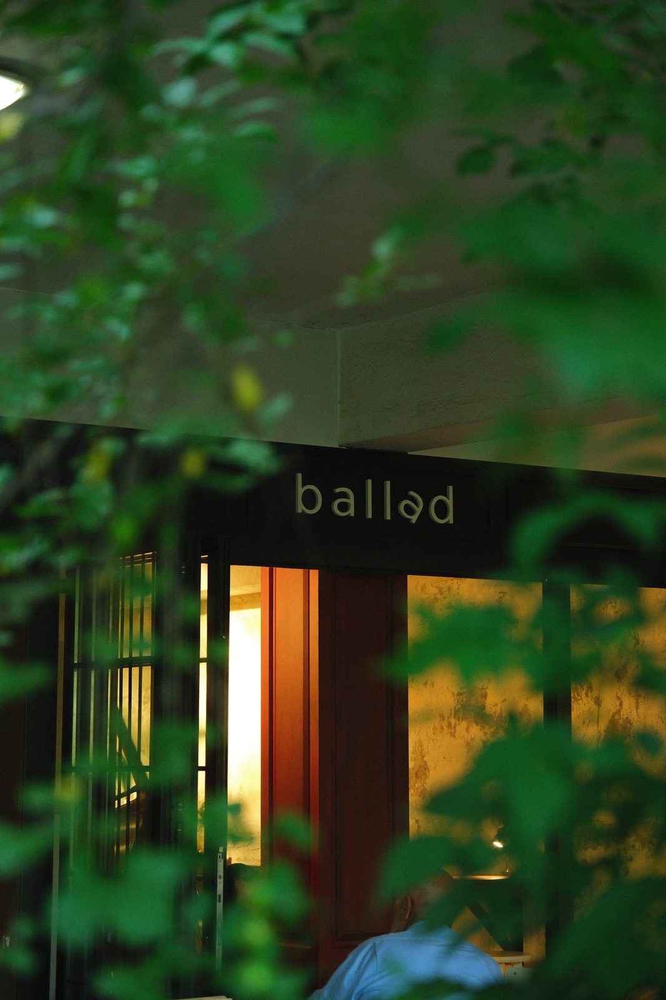
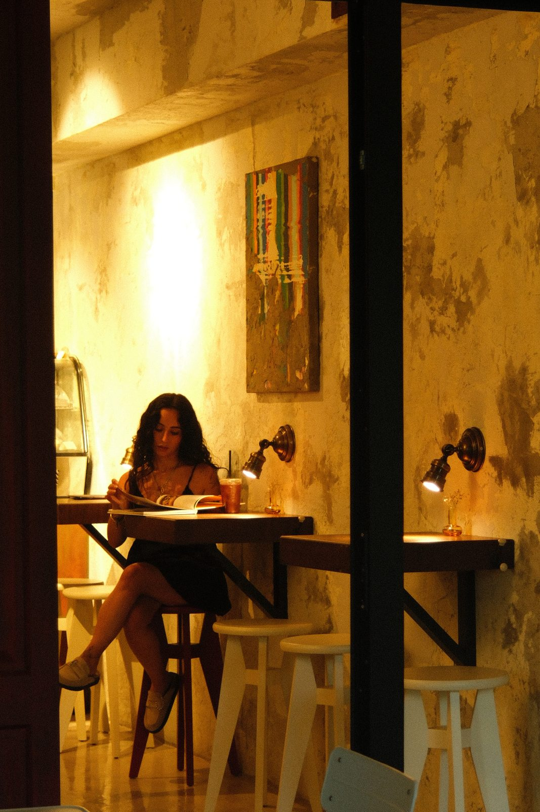
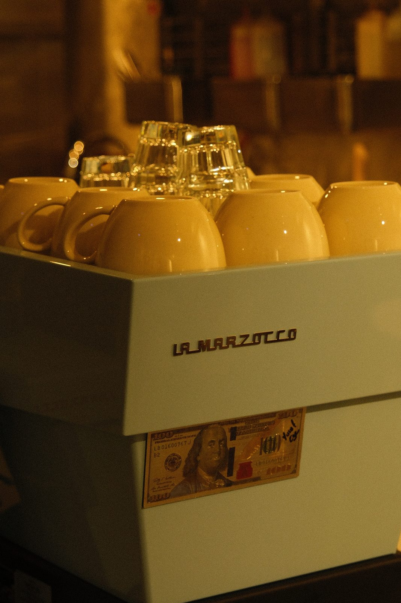
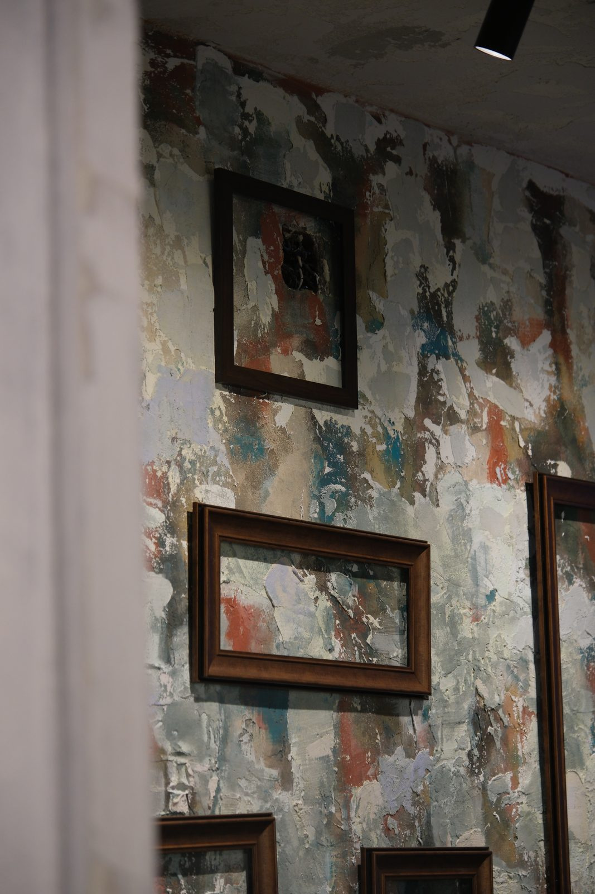
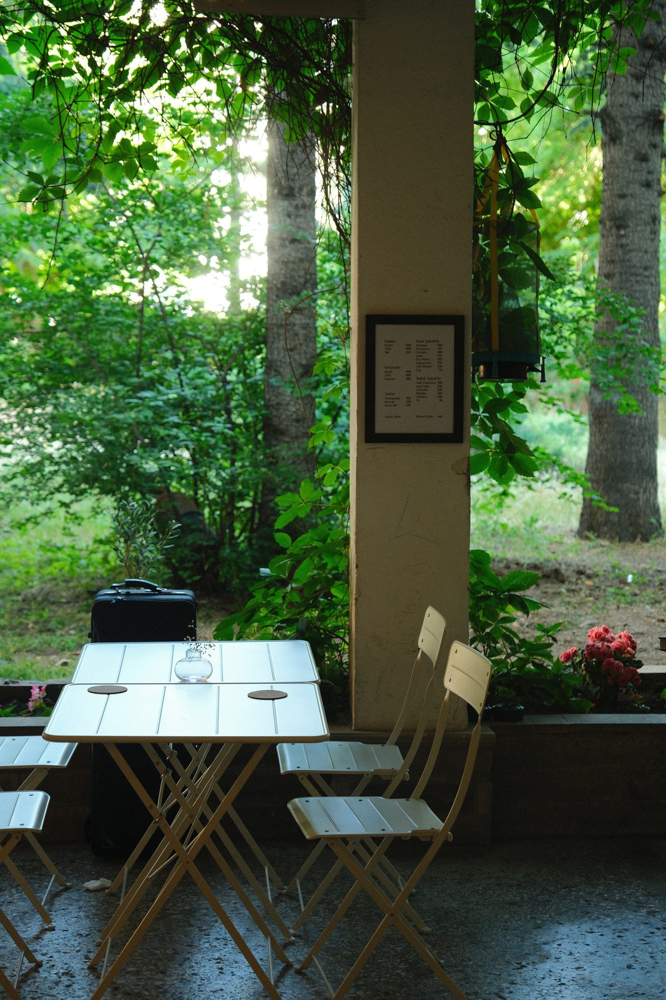
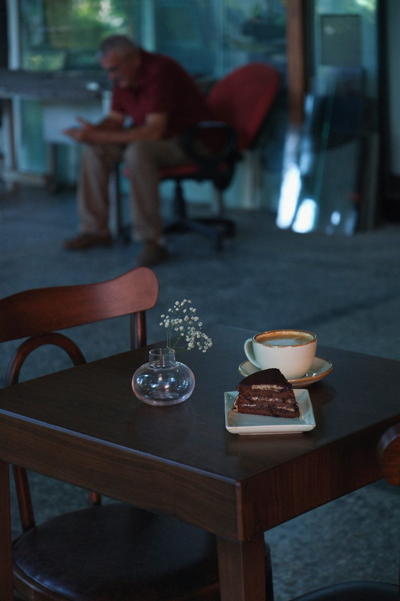
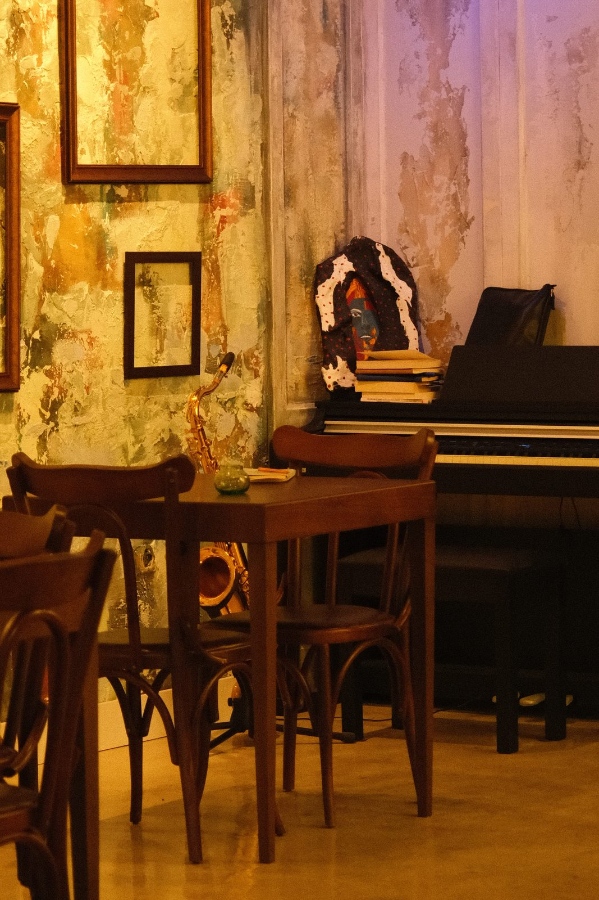
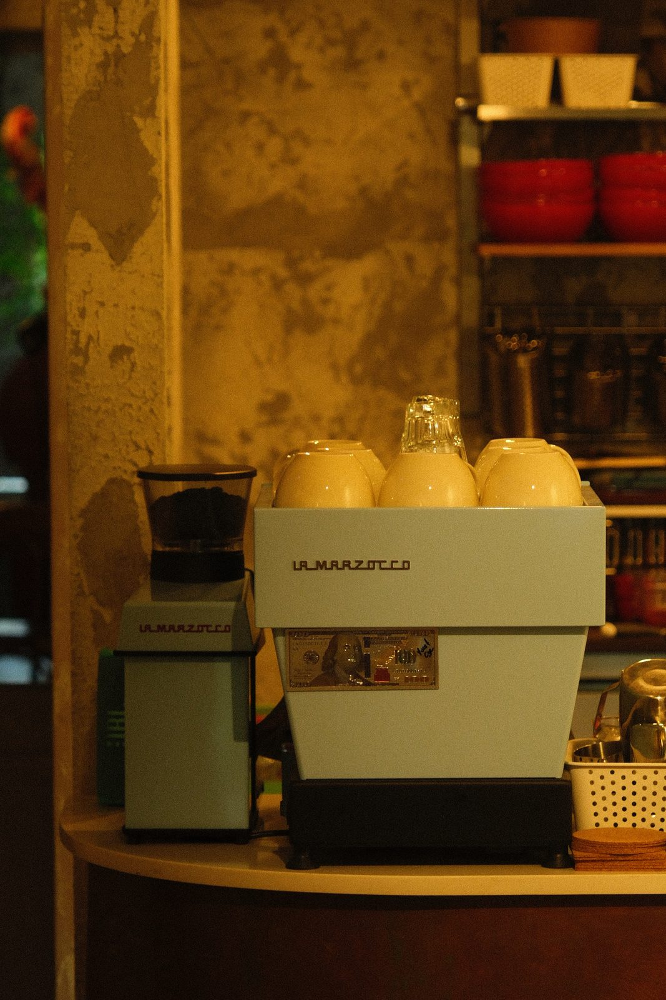
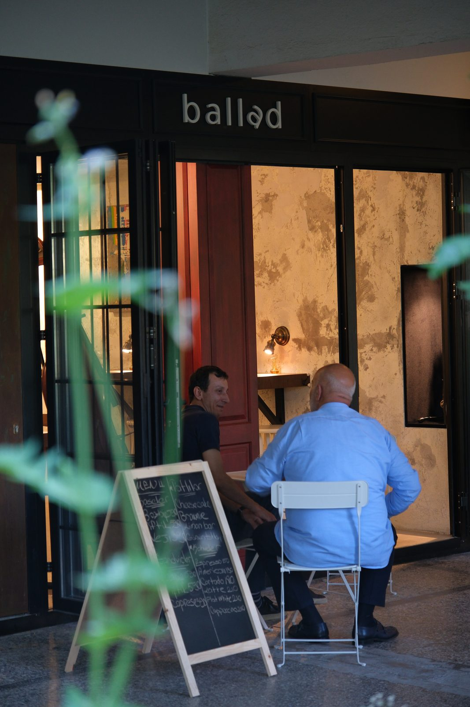
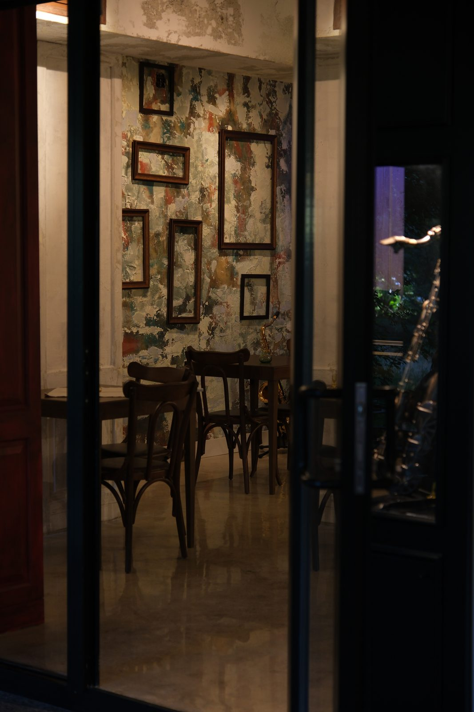
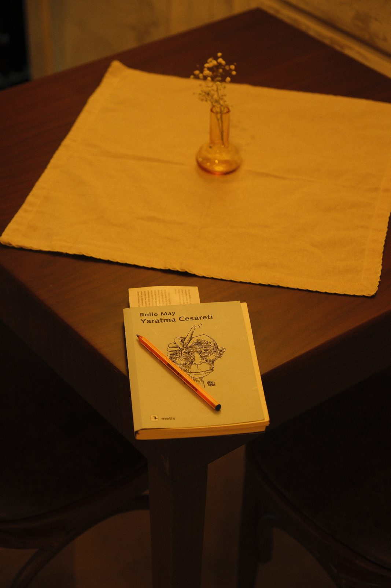
Ballad'da servis ettiğimiz her lezzet, mutfağımızda özenle hazırlanır. Hazır ürünler yerine emek, zaman ve sabrı merkeze alan bir üretim anlayışını benimsiyoruz.
Etlerimizi kendi mutfağımızda uzun saatler boyunca pişiriyoruz. Roastbeef tam 24 saat, tiftik et ise 13 saat boyunca düşük ısıda ağır ağır pişirilerek kendine özgü lezzetine ulaşıyor. Tatlılarımızın tamamı ise katkı maddesi kullanılmadan, günlük ve el yapımı olarak hazırlanıyor. Her tarifte önce doğallığı, sonra lezzeti önemsiyoruz.
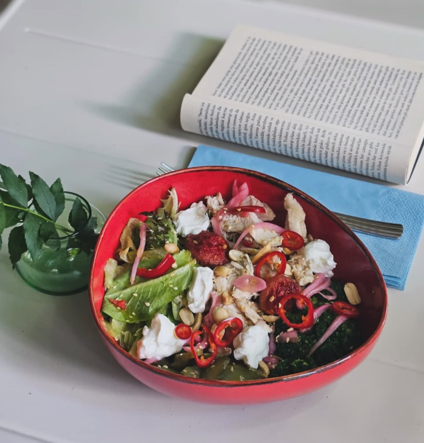
Ballad'da her tabak, sadece doyurmak için değil;
paylaşılacak bir deneyim ve keyifle hatırlanacak bir lezzet sunmak için hazırlanır.